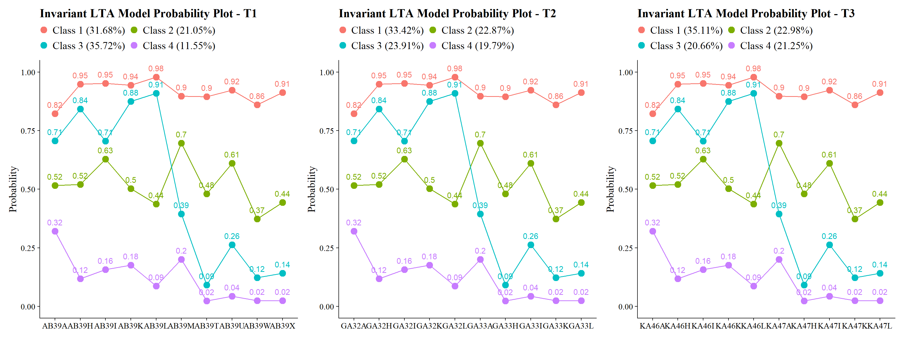
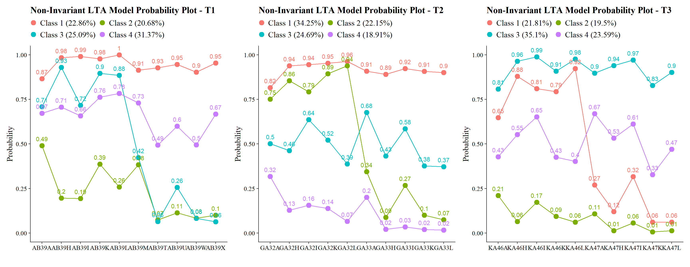

32 Phase 2: Testing for Measurement Invariance
32.3 Estimate the Non-Invariant Joint Configural Model (No Transitions)
lta_non_inv <- mplusObject(
TITLE =
"Non-Invariant LTA Model",
VARIABLE =
"idvariable=CASENUM;
usev =
AB39A AB39H AB39I AB39K AB39L AB39M AB39T AB39U AB39W AB39X
GA32A GA32H GA32I GA32K GA32L GA33A GA33H GA33I GA33K GA33L
KA46A KA46H KA46I KA46K KA46L KA47A KA47H KA47I KA47K KA47L;
categorical =
AB39A AB39H AB39I AB39K AB39L AB39M AB39T AB39U AB39W AB39X
GA32A GA32H GA32I GA32K GA32L GA33A GA33H GA33I GA33K GA33L
KA46A KA46H KA46I KA46K KA46L KA47A KA47H KA47I KA47K KA47L;
classes = c1(4) c2(4) c3(4);",
ANALYSIS =
"estimator = mlr;
type = mixture;
starts = 500 200;",
MODEL =
"%overall%
MODEL c1:
%c1#1%
[AB39A$1-AB39X$1];
%c1#2%
[AB39A$1-AB39X$1];
%c1#3%
[AB39A$1-AB39X$1];
%c1#4%
[AB39A$1-AB39X$1];
MODEL c2:
%c2#1%
[GA32A$1-GA33L$1];
%c2#2%
[GA32A$1-GA33L$1];
%c2#3%
[GA32A$1-GA33L$1];
%c2#4%
[GA32A$1-GA33L$1];
MODEL c3:
%c3#1%
[KA46A$1-KA47L$1];
%c3#2%
[KA46A$1-KA47L$1];
%c3#3%
[KA46A$1-KA47L$1];
%c3#4%
[KA46A$1-KA47L$1];",
OUTPUT = "svalues;",
usevariables = colnames(lsay_data),
rdata = lsay_data)
lta_non_inv_fit <- mplusModeler(lta_non_inv,
dataout=here("three_lta", "phase_2", "lta.dat"),
modelout=here("three_lta", "phase_2", "noninvariant_lta.inp"),
check=TRUE, run = TRUE, hashfilename = FALSE)After estimation, this model is retained strictly as the reference model for nested testing.
32.4 Estimate the Full Measurement-Invariance Model
lta_inv <- mplusObject(
TITLE =
"Invariant LTA Model",
VARIABLE =
"idvariable=CASENUM;
usev =
AB39A AB39H AB39I AB39K AB39L AB39M AB39T AB39U AB39W AB39X
GA32A GA32H GA32I GA32K GA32L GA33A GA33H GA33I GA33K GA33L
KA46A KA46H KA46I KA46K KA46L KA47A KA47H KA47I KA47K KA47L;
categorical =
AB39A AB39H AB39I AB39K AB39L AB39M AB39T AB39U AB39W AB39X
GA32A GA32H GA32I GA32K GA32L GA33A GA33H GA33I GA33K GA33L
KA46A KA46H KA46I KA46K KA46L KA47A KA47H KA47I KA47K KA47L;
classes = c1(4) c2(4) c3(4);",
ANALYSIS =
"estimator = mlr;
type = mixture;
starts = 0;
processors=10;",
MODEL =
"
%overall%
MODEL c1:
%c1#1%
[AB39A$1-AB39X$1](1-10);
%c1#2%
[AB39A$1-AB39X$1](11-20);
%c1#3%
[AB39A$1-AB39X$1](21-30);
%c1#4%
[AB39A$1-AB39X$1](31-40);
MODEL c2:
%c2#1%
[GA32A$1-GA33L$1](1-10);
%c2#2%
[GA32A$1-GA33L$1](11-20);
%c2#3%
[GA32A$1-GA33L$1](21-30);
%c2#4%
[GA32A$1-GA33L$1](31-40);
MODEL c3:
%c3#1%
[KA46A$1-KA47L$1](1-10);
%c3#2%
[KA46A$1-KA47L$1](11-20);
%c3#3%
[KA46A$1-KA47L$1](21-30);
%c3#4%
[KA46A$1-KA47L$1](31-40);",
OUTPUT = "svalues;",
usevariables = colnames(lsay_data),
rdata = lsay_data)
lta_inv_fit <- mplusModeler(lta_inv,
dataout=here("three_lta", "phase_2", "lta.dat"),
modelout=here("three_lta", "phase_2", "invariant_lta.inp"),
check=TRUE, run = TRUE, hashfilename = FALSE)This model yields the measurement structure used for all downstream auxiliary-variable analyses if invariance is retained.
32.4.1 Plotting the Non-Invariant and Invariant Models
source(here("functions","plot_lta.R"))
inv_mod <- readModels(here("three_lta", "phase_2"), quiet = TRUE)
plot_lta(inv_mod$invariant_lta.out)
plot_lta(inv_mod$noninvariant_lta.out)
32.5 Nested Model Testing: Satorra–Bentler Scaled χ² Difference Test
# *0 = null or nested model & *1 = comparison or parent model
lta_models <- readModels(here("three_lta", "phase_2"), quiet = TRUE)
# Log Likelihood Values
L0 <- lta_models$invariant_lta.out$summaries$LL
L1 <- lta_models$noninvariant_lta.out$summaries$LL
# LRT equation
lr <- -2*(L0-L1)
# Parameters
p0 <- lta_models$invariant_lta.out$summaries$Parameters
p1 <- lta_models$noninvariant_lta.out$summaries$Parameters
# Scaling Correction Factors
c0 <- lta_models$invariant_lta.out$summaries$LLCorrectionFactor
c1 <- lta_models$noninvariant_lta.out$summaries$LLCorrectionFactor
# Difference Test Scaling correction
cd <- ((p0*c0)-(p1*c1))/(p0-p1)
# Chi-square difference test(TRd)
TRd <- (lr)/(cd)
# Degrees of freedom
df <- abs(p0 - p1)
# Significance test
(p_diff <- pchisq(TRd, df, lower.tail=FALSE))
#> [1] 2.294394e-40
32.6 Alternatively: Nested Model Testing Using compareModels in MplusAutomation
invisible(capture.output(
comparison <- compareModels(lta_models$invariant_lta.out, lta_models$noninvariant_lta.out, diffTest=TRUE)
))
# p-value
comparison$diffTest$MLR_LL$p
#> [1] 2.294394e-40
#BIC
comparison$summaries
#> Title Observations Estimator Parameters
#> 1 Invariant LTA Model 1907 MLR 49
#> 2 Non-Invariant LTA Model 1907 MLR 129
#> LL AIC BIC
#> 1 -23700.74 47499.48 47771.59
#> 2 -23492.12 47242.24 47958.62